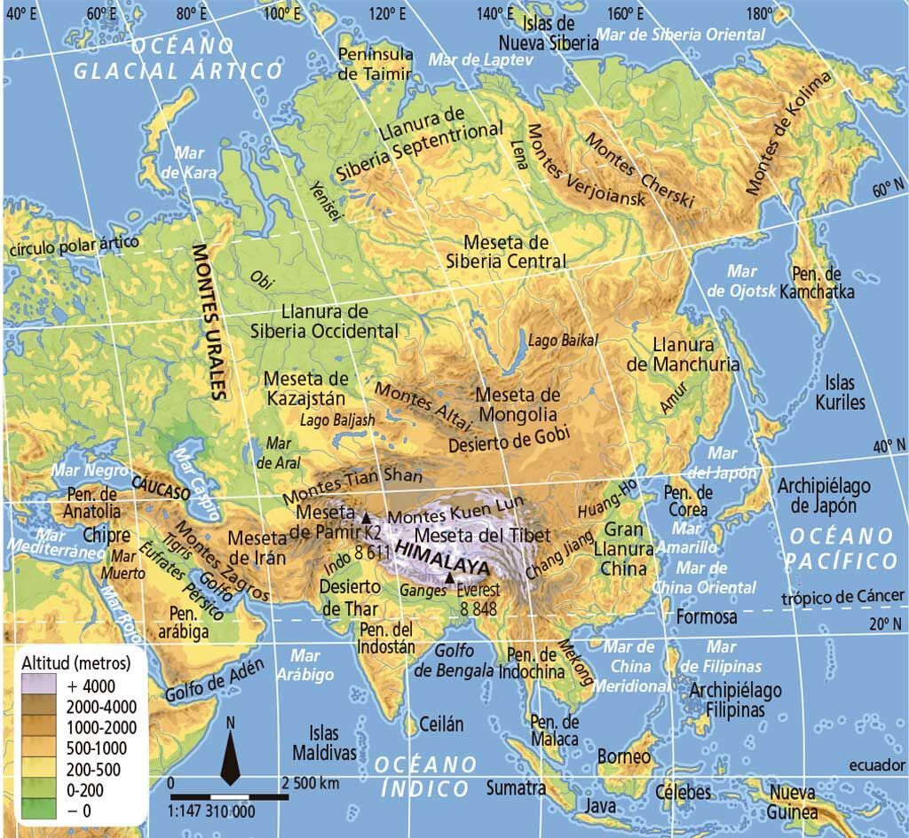
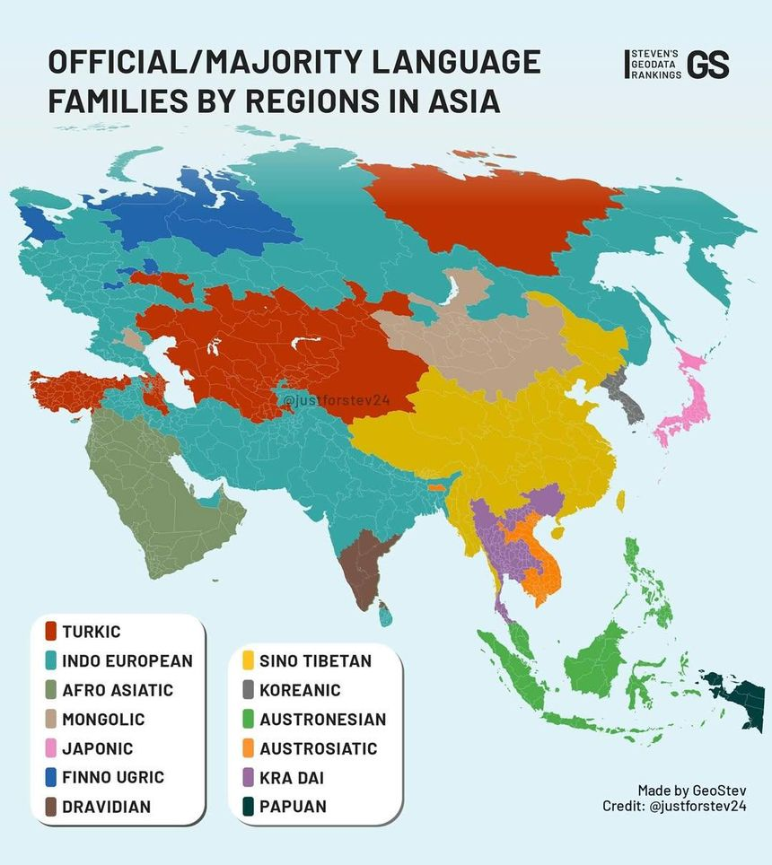
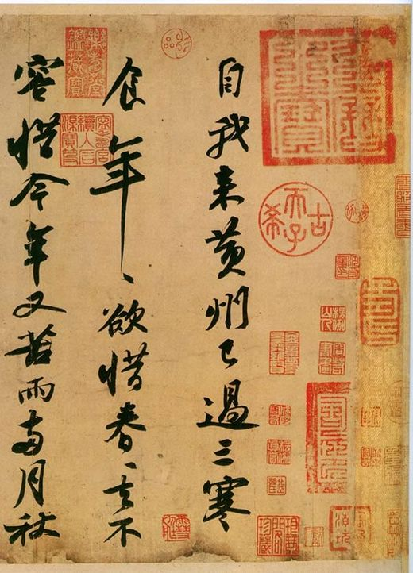
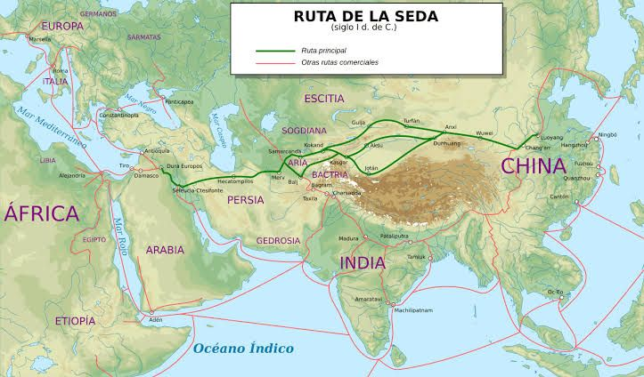
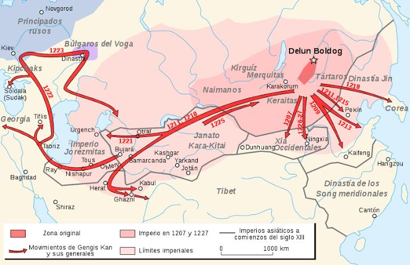
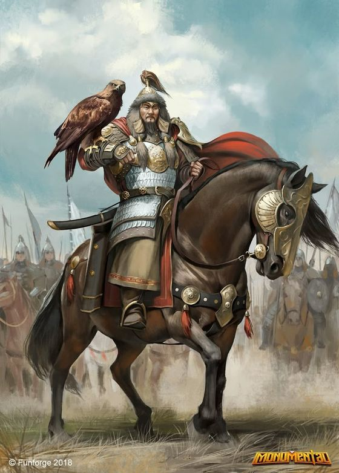
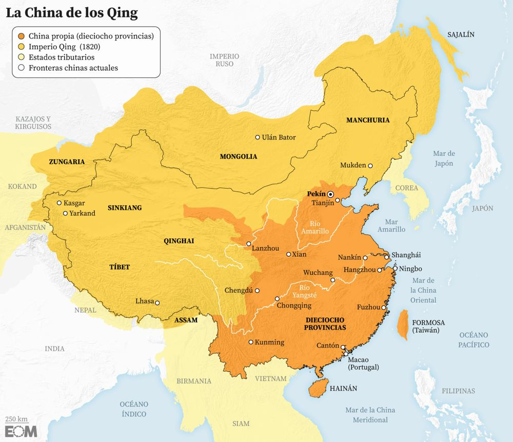
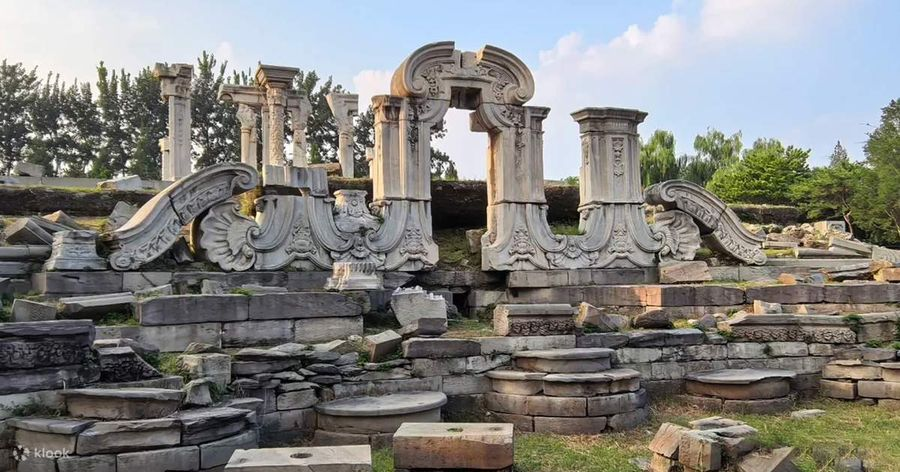
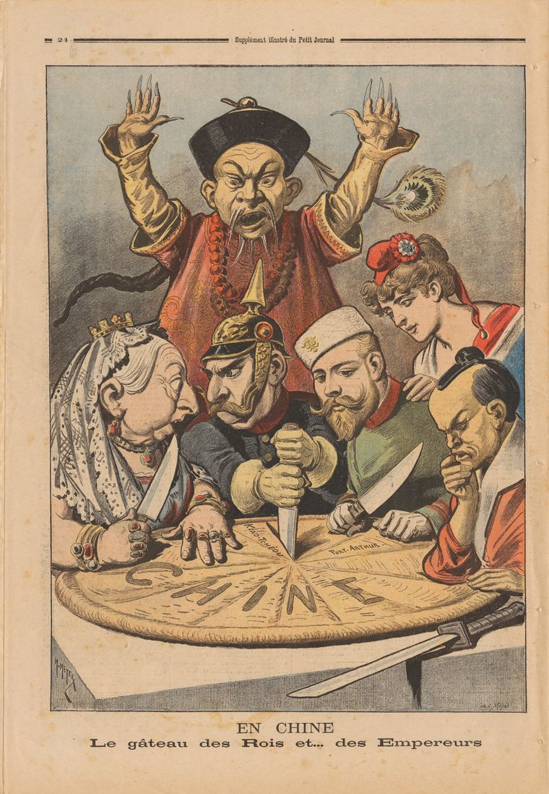
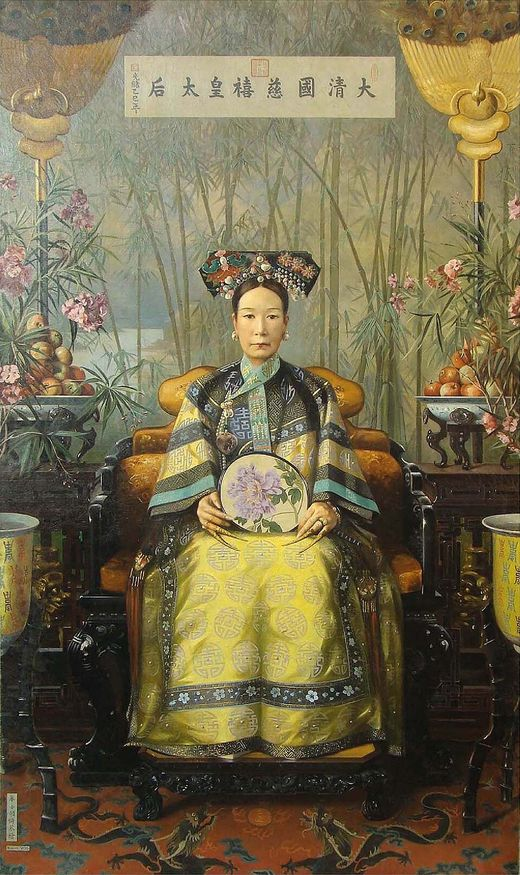

Escull una classe per obrir-ne els apunts. Les classes noves s'aniran afegint aquí a mesura que avanci el curs.
亜細亜
Curs de cultura asiàtica amb la professora Elvira Sánchez: 12 classes, amb el programa a l'aula virtual.
Les grans civilitzacions asiàtiques neixen al costat dels rius, que donen aigua, terra fèrtil i camins. Les muntanyes, en canvi, separen i aïllen.

Al centre d'Àsia hi ha les serralades més altes del món, que han fet molt difícil la comunicació entre regions.
Només es podien travessar per alguns passos, i sovint només a l'estiu: el pas de Khyber (cap a l'Índia), el pas de Torugart (Kirguizistan–Xina) i la porta de Dzungària (Kazakhstan–Xina), el passadís dels nòmades.
En xinès, la Xina es diu Zhongguo (中国), «el país del mig». Els xinesos es veien com el centre del món.
A Àsia han conviscut durant mil·lennis dues maneres de viure. Aquesta convivència, sovint tensa, explica bona part de la seva història.
Els nòmades necessitaven cereals, teixits i metalls; els sedentaris volien cavalls. Quan el comerç fallava, venien els saqueigs.
Es va construir per protegir la Xina de les invasions i els robatoris dels nòmades del nord. No és una sola muralla, sinó murs i torres aixecats durant uns 2.000 anys.
Tot i la muralla, els nòmades van conquerir la Xina més d'una vegada: els mongols (dinastia Yuan) i els manxús (dinastia Qing).
Àsia té gairebé el 60 % de la població mundial, però molt mal repartida. La densitat depèn del clima (aigua, monsó, sòls fèrtils) i del control del territori (estats, reg, ciutats).
La mida de cada sol és proporcional a la seva població. La vall de Ferganà, regada pel Sir Darià i repartida entre l'Uzbekistan, el Kirguizistan i el Tadjikistan, és la zona més poblada d'Àsia central.
Xifres dels apunts. Els percentatges anotats al costat de cada zona (43 %, 7 %, 7 %) queden per confirmar.
A classe es va fer servir un mapa amb un color per a cada gran família de llengües.
Les llengües túrquiques van viatjar des d'Àsia central cap a l'oest amb els pobles nòmades. Els otomans en són descendents.


Una xarxa de camins terrestres i marítims que connectava pobles en tres sentits: comercial, religiós i cultural.

Les caravanes sortien de Xi'an (l'antiga Chang'an), la capital xinesa. Per terra travessaven deserts i muntanyes passant per oasis com Samarcanda; per mar anaven per Sumatra, Java, Borneo i Bali i l'estret de Malacca. Petra era una de les ciutats caravaneres de l'extrem occidental.
Els mercaders dormien en albergs (caravanserralls), pagaven impostos a cada regne i estaven exposats als atacs dels nòmades.
Les rutes comercials també van escampar religions per tot el continent.
Amb Genguis Khan i els seus descendents, els mongols creen l'imperi terrestre continu més gran de la història: Xina, Àsia central i Pèrsia, Rússia i Europa oriental.

Marco Polo va arribar a la Xina i es va trobar amb Kublai Khan, el nét de Genguis Khan.

Les rutes de l'oceà Índic van ser dominades successivament per xinesos, àrabs i, finalment, europeus.
El navegant portuguès és el primer a arribar a l'Índia per mar, vorejant l'Àfrica.
Primera volta al món. L'expedició arriba a les Moluques, les illes de les espècies, navegant cap a l'oest.
Substitueixen portuguesos i espanyols i creen grans companyies comercials i imperis colonials.
La costa d'Oman era coneguda com la costa dels pirates. Al Japó, els portuguesos eren els nanban (南蛮), «els bàrbars del sud».
大清國
Títol de la classe: La Xina, el declivi de l'imperi manxú i la república. La guerra civil. Avui la Xina és la segona economia del món, però ja ho havia estat durant segles.
A classe també es va dibuixar l'extensió de l'imperi Qing, molt més gran que el territori Ming: hi entren Mongòlia, Manxúria, el Tibet i Qinghai, amb Corea com a regne tributari i la frontera amb el Nepal i l'Índia britànica al sud-oest.

Els Qing venien de Manxúria, al nord-est. Eren estrangers per als xinesos han, i van imposar els seus símbols per marcar qui manava.
Els manxús van trigar uns 40 anys a conquerir tota la Xina: van entrar a Pequín el 1644 i no van sotmetre l'última resistència (Taiwan) fins al 1683.
Al segle XIX l'imperi s'esquerda per dins: la societat es desestructura i l'estat ja no funciona.
Liderada per Hong Xiuquan, que es presentava com a germà de Jesucrist i volia fundar el «Regne Celestial de la Gran Pau». Va ser una guerra civil enorme: segons els apunts va durar uns 20 anys (la fase principal va del 1850 al 1864) i hi van morir uns 20 milions de persones.
L'altra causa del declivi ve de fora: les potències estrangeres obren la Xina per la força.
Tractat de Nanquín (1842): la Xina cedeix Hong Kong i obre ports al comerç.
Tractat de Tianjin (1858): llibertat per a les missions cristianes i legacions (ambaixades) estrangeres a Pequín. James Bruce, 8è comte d'Elgin, ordena cremar l'antic Palau d'Estiu (1860).
Aigun (1858) i Pequín (1860): Rússia es queda els territoris del nord de l'Amur i la costa del Pacífic.
Després de perdre la guerra amb el Japó, la Xina cedeix Taiwan (Formosa) i perd el control de Corea.

França hi va tenir una penetració comercial, però no territorial dins de la Xina.
Els bòxers eren una secta que practicava arts marcials. No eren anti-manxús, sinó anti-estrangers: volien expulsar els estrangers i els missioners cristians.
Una caricatura francesa de l'època mostra els líders de les potències repartint-se la Xina com si fos un pastís, mentre un mandarí xinès alça les mans al darrere sense poder fer-hi res:

Als apunts hi posa «reina Isabel», però a la caricatura del 1898 qui surt és la reina Victòria.

Qui manava de veritat era l'emperadriu vídua Cixi, mare d'un emperador i tia del següent, Guangxu (manxú). Cixi va acabar donant suport als bòxers.
La revolta va acabar amb el setge de les legacions estrangeres de Pequín, que inspira la pel·lícula 55 dies a Pequín (1963).
Funda el seu primer grup revolucionari. Serà el pare de la República.
L'últim emperador de la Xina.
Una part de l'exèrcit del Nord, dirigit per Yuan Shikai, i els notables rurals deixen caure l'imperi. Sun Yat-sen és president provisional fins al 1912.
La primera bandera de la República representava els cinc pobles de la Xina units:
Yuan Shikai governa la República del 1913 al 1916. Anys abans, el 1898, havia traït els reformistes de l'emperador Guangxu a favor de Cixi.
Quan mor Yuan Shikai, el país es trenca en territoris controlats per militars, els senyors de la guerra. És la primera fase de la guerra civil.
Els apunts acaben amb un dibuix de la bandera actual de la Xina (una estrella gran i quatre de petites). La història continua a la classe 3.